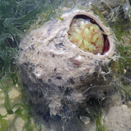
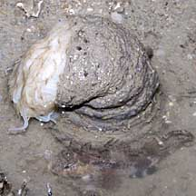
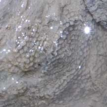

|
|
| cerianthid text index | photo index |
| Phylum Cnidaria > Class Anthozoa > Subclass Zoantharia/Hexacorallia > Order Ceriantharia |
| Cerianthids Order Ceriantharia updated Dec 2019
Where seen? These elegant animals with long colourful tentacles are commonly encountered on many of our shores. They are often seen in soft, silty muddy areas, as well as in sandy areas near seagrasses. At low tide during a cool morning or evening, cerianthids in a pool of water might continue to extend their tentacles. Otherwise, they are often overlooked because their long colourful tentacles are retracted completely into their sand-coloured tubes. Do watch your step to avoid stepping on them. What are cerianthids? Cerianthids are Cnidarians that belong to the same Class Anthozoa as sea anemones. There are 50-75 known species of cerianthids in three families. They come in a wide range of colours and patterns and are thus sometimes called peacock anemones. However, they are not true anemones, which belong to Order Actiniaria. Features: Up to 30cm in diameter with tentacles expanded, those seen from 5-15cm in diameter. The cerianthid is a large, solitary polyp that burrows in soft ground and lives permanently in a tube. So it is also sometimes called the tube anemone or the burrowing anemone (although they are not true anemones). The cerianthid has two types of tentacles. An outer ring of long graceful tentacles called the proximal tentacles. Some species have only one ring of proximal tentacles, others have several. These long tentacles gather food from the water. There is an inner ring of shorter tentacles that ring the central mouth, called the distal tentacles. These short tentacles tuck food into the mouth. Cerianthids come in many different colours and patterns, and hence sometimes called Peacock anemones (although they are not true anemones). The short tentacles may be a different colour from the long tentacles. The long tentacles may be banded or variegated. Sometimes, cerianthids are encountered with their long tentacles coiled in spirals. A cerianthid has stingers like other Cnidarians. A cerianthid makes its tube using specialised stingers called ptychocysts. Only cerianthids have ptychocysts. These stingers create adhesive strings that mat together with sand and slime and hardens to form a tube that has been described as leathery, felt-like and parchment-like. The tube can be more than 1m length in some cerianthids! Only a short part of the tube sticks out above the ground. The rest is buried in the ground. Often, at low tide, all you will see of a cerianthid is a short portion of its soft tube that sticks out of the ground. Please don't try to dig up a cerianthid. You will hurt it and it may die if it is not properly anchored and gets washed away with the incoming tide. The cerianthid doesn't have a 'door' to close the opening of its tube. To seal the tube and reduce water loss at low tide, the top part of the soft tube flops over, with the animal hidden deeper in the ground. The cerianthid's body column is long, narrow and smooth. It doesn't have bumps (verrucae) like some true anemones. The body column comes in many colours from white to purple. Being adapted to live in soft sediments, its body column doesn't end in a flattened pedal disk. Instead, it has a smooth tip called the physa. This tip can be expanded into a bulbous shape and is used to burrow with and to anchor itself in the soft ground. Strong muscles along the length of the body column allows it to retract completely into its tube. The cerianthid cannot tuck its tentacles inside its body column like true anemones do. Instead, it bundles its tentacles together and the entire animal retracts down into the protective tube. Sometimes confused with true sea anemones. Here's more on how to tell apart animals with a ring of smooth tentacles. |
 An inner ring of shorter tentacles identifies this as a cerianthid. Pulau Semakau, Apr 08 |
 Long body column that slips into an even longer tube. Changi, Jun 03 |
 Chek Jawa, Apr 12 |
| What do they eat? Cerianthids
do not harbour symbiotic algae (zooxanthellae). They feed on plankton
and suspended food particles which they gather from the water. Cerianthids
have potent stingers that can even be released into the water. These
floating stingers can seriously affect creatures such as fishes and
corals. (more about stingers on the Cnidria
page) Peacock Babies:They reproduce by releasing eggs and sperm into the water. The larvae are tiny and drift with other plankton before settling down to become a new cerianthid. Cerianthids are also known to reproduce asexually. Some can also reproduce by budding. Peacock friends: Various animals may live with a cerianthid. Small black feathery fanworm-like creatures called Phoronid worms may be found near cerianthids. Is it said some small crabs (Lissocarcinus laevis) also live inside the tube with the cerianthid and some shrimps (Periclimenes sp.) are associated with the cerianthid. |
 Tiny black Phoronid worms are often seen with cerianthids. Changi, Jun 03 |
 Scorpionfish hiding next to cerianthid. Changi, May 11 |
 Laid on a cerianthid tube: eggs? Changi, May 11 |
| Human uses: Cerianthids are sometimes
taken for the live aquarium trade. However, they do not make good
tank mates as their floating stingers affect other creatures in the
tank. Their burrowing habit and long body columns means they require
deep tank beds. They also only take suspended food. This makes them
difficult to keep alive in a home aquarium. Status and threats: Cerianthids are not listed among the threatened animals of Singapore. However, like other animals harvested for the live aquarium trade, most die before they can reach the retailers. Without professional care, most die soon after they are sold. Those that do survive are unlikely to breed successfully. Like other creatures of the intertidal zone, they are affected by human activities such as reclamation and pollution. Trampling by careless visitors, and over-collection also have an impact on local populations. |
| Some Cerianthids on Singapore shores |


| Order
Ceriantharia recorded for Singapore from Wee Y.C. and Peter K. L. Ng. 1994. A First Look at Biodiversity in Singapore.
|
Links
|